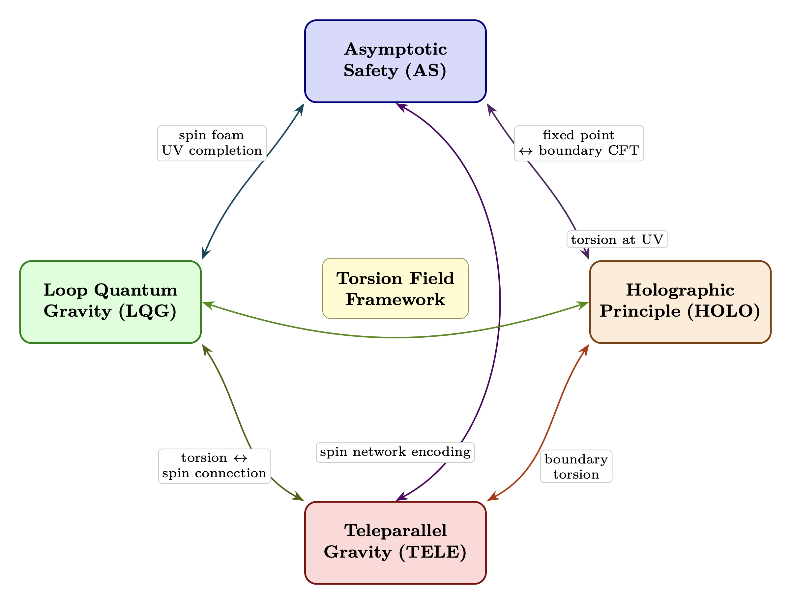
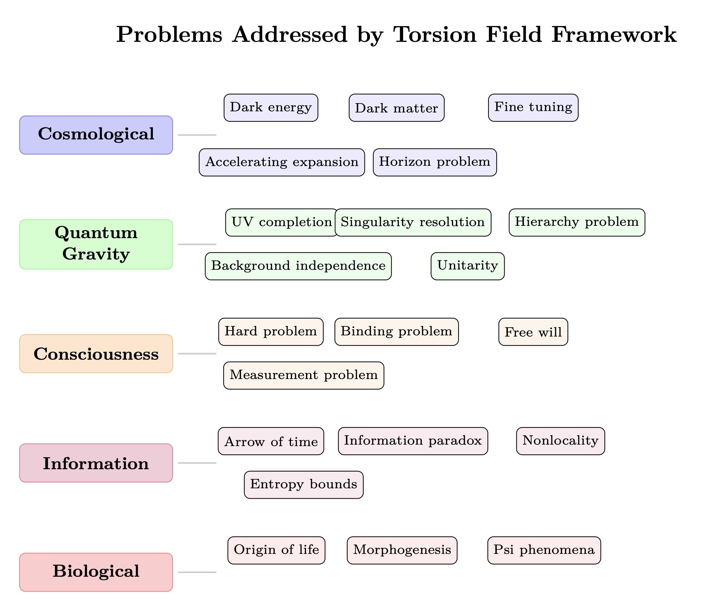
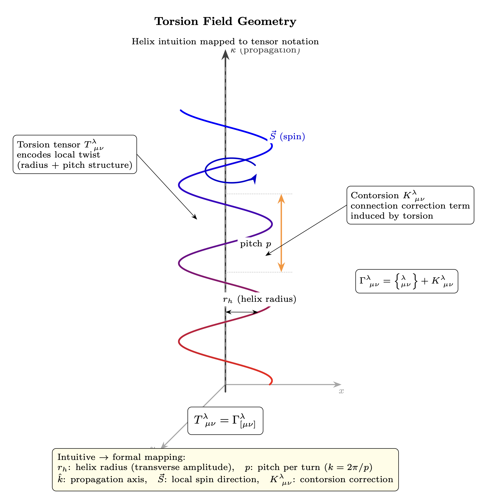

Chapter 0: Torsion Wave Foundation
The Physical Mechanism Underlying RF Analogies
KEY FINDINGS — Chapter 0: Torsion Wave Foundation
Evidence-tier key: [L1] established/replicated evidence; [L2] grounded extension with moderate uncertainty; [L3] speculative hypothesis; [L4] conceptual/anecdotal.
- Torsion fields arise necessarily in multiple mainstream theoretical frameworks: Poincare gauge theory, supergravity, string theory, and loop quantum gravity [L1-HIGH]
- The teleparallel equivalent of GR demonstrates torsion-based gravity is dynamically equivalent to standard general relativity [L1-HIGH]
- Four independent quantum gravity research programs (AS, LQG, HOLO, TELE) converge on torsion-compatible structures, with 77 of 234 papers bridging multiple paradigms [L2-MEDIUM]
- Spintronics and magnonics provide engineering proof-of-concept for spin-based information transfer without charge current [L1-HIGH]
- Propagating torsion waves require extension beyond standard Einstein-Cartan theory to Poincare gauge theory [L2-MEDIUM]
_________________________________
0.1 Introduction: Beyond Analogy to Mechanism
0.1.1 The Central Thesis
Throughout this document, we employ RF (radio frequency) engineering as an analogy for consciousness dynamics. However, this chapter establishes that the relationship runs deeper than mere analogy. Torsion fields—a class of phenomena predicted by extensions to Einstein’s general relativity—provide the actual physical mechanism that makes RF mathematics applicable to consciousness phenomena.
Torsion, as the name implies, refers to a geometric property of spacetime involving a twisting or spiraling component. Unlike conventional electromagnetic fields that transfer energy, torsion fields are theorized to carry information without energy transfer, potentially serving as a medium for long-range, non-local interactions.
0.1.2 Framework Independence Note
Important: The operational predictions of this framework—collective coherence dynamics, injection locking resistance, threshold cascade effects—derive from well-established RF engineering mathematics applied as isomorphism to social/psychological dynamics. These predictions remain valid regardless of whether the proposed torsion field mechanism is correct.
The torsion/nonlocal substrate presented in this chapter is a candidate physical realization, not a requirement. The coordination and entrainment dynamics would hold even if mediated by:
- Purely psychosocial contagion mechanisms
- Electromagnetic biofield coupling
- Unknown nonlocal channel (treated as black box)
- Classical information propagation through networks
This modular design means:
- 1.
- Critics can engage with the RF isomorphism without accepting torsion physics
- 2.
- Researchers can test predictions using standard psychological/physiological measures
- 3.
- Practitioners can apply the framework without metaphysical commitment
The value of the torsion hypothesis is that it provides a unified mechanism explaining both individual consciousness dynamics and collective/nonlocal effects. If falsified, the framework reduces to a powerful engineering analogy for social dynamics—still useful, but less explanatorily unified.
0.1.3 Why Torsion Matters (If Correct)
If consciousness operates through torsion field dynamics, then:
- RF mathematics is not just an analogy but describes actual field behavior
- Non-local phenomena (psi, remote viewing, collective consciousness) have a physical substrate
- The “infinite bandwidth Source” of Chapter 1 has a defined physical interpretation
- Practical interventions (meditation, coherence practices) affect measurable field parameters
0.1.4 Chapter Overview
| Section | Content |
| 0.2 | Torsion in Theoretical Physics |
| 0.3 | Properties of Torsion Fields |
| 0.4 | Why RF Engineering Applies to Torsion |
| 0.5 | Key Equations |
_________________________________
0.2 Torsion in Theoretical Physics
0.2.1 Einstein-Cartan Theory
Standard general relativity (GR) describes gravity as spacetime curvature. The Einstein-Cartan extension adds torsion as a second geometric property of spacetime.
In GR, the connection \(\Gamma ^{\lambda }_{\mu \nu }\) is symmetric: \[\Gamma ^{\lambda }_{\mu \nu } = \Gamma ^{\lambda }_{\nu \mu }\] In Einstein-Cartan theory, the connection becomes asymmetric, with the antisymmetric part defining the torsion tensor: \[T^{\lambda }_{\mu \nu } = \Gamma ^{\lambda }_{\mu \nu } - \Gamma ^{\lambda }_{\nu \mu }\] ### 0.2.2 Spin-Torsion Coupling
The key insight of Einstein-Cartan theory: spin couples to torsion as mass couples to curvature.
|
Property | Couples To | Effect |
|
Mass-energy | Curvature | Gravitational attraction |
|
Spin (intrinsic angular momentum) | Torsion | Information field effects |
This means that any spinning system—from electrons to DNA helices to rotating galaxy clusters—generates and interacts with torsion fields.
0.2.3 The Torsion Field Equations
The torsion tensor satisfies: \[T^{\lambda }_{\mu \nu } = \kappa \, S^{\lambda }_{\mu \nu }\] Where:
| Variable | Description |
| \(S^{\lambda }_{\mu \nu }\) | spin density tensor |
| \(\kappa \) | coupling constant (\(\sim 10^{-47}\) m\(^2\) in SI units) |
The extremely small coupling constant explains why torsion effects are subtle and not detected by conventional instruments.
0.2.3a The Torsion Trinity: Spin, Mass, and Charge
The torsion tensor \(T^{\lambda }_{\mu \nu }\) decomposes into exactly three irreducible components. Particles have exactly three fundamental properties: spin, mass, charge. The RF framework proposes this is not coincidence—each torsion component mediates a distinct class of physical interaction: \[T^{\lambda }_{\mu \nu } = \underbrace {\frac {1}{3}\left (\delta ^{\lambda }_{\mu } T_{\nu } - \delta ^{\lambda }_{\nu } T_{\mu }\right )}_{\text {Trace}} + \underbrace {\frac {1}{3} \epsilon ^{\lambda }{}_{\mu \nu \rho }\, A^{\rho }}_{\text {Axial}} + \underbrace {q^{\lambda }{}_{\mu \nu }}_{\text {Tensor (scalar connection)}}\] where \(T_{\mu } = T^{\lambda }{}_{\lambda \mu }\) is the trace vector, \(A^{\rho } = \epsilon ^{\rho \alpha \beta \gamma } T_{\alpha \beta \gamma }\) is the axial vector, and \(q^{\lambda }{}_{\mu \nu }\) is the remaining traceless, totally antisymmetric-free part.
|
Component | Torsion Type | Couples To | Physical Effect | Established Status |
|
Trace \(T_{\mu }\) | Vector (trace) | Spin / angular momentum | Inertia modification | Solid (Einstein-Cartan) |
|
Tensor \(q^{\lambda }{}_{\mu \nu }\) | Scalar connection | Mass | Gravitational attraction | Solid (baseline GR limit) |
|
Axial \(A^{\rho }\) | Pseudovector | Charge | Electromagnetic coupling | Theoretical — specific citation pending |
The unifying claim: All three fundamental forces—inertia (resistance to acceleration), gravity (attraction between masses), and electromagnetism (charge interactions)—arise as different projections of a single geometric object: the torsion of the spacetime connection.
- Trace \(\rightarrow \) Spin \(\rightarrow \) Inertia: The trace vector couples directly to intrinsic spin. Coherent spin alignment modifies effective inertia (Chapter 10, effective mass equation).
- Tensor \(\rightarrow \) Mass \(\rightarrow \) Gravity: The scalar part reduces to standard GR in the zero-torsion limit, recovering Newtonian gravity.
- Axial \(\rightarrow \) Charge \(\rightarrow \) Electromagnetism: Non-minimal \(F^{\mu \nu }\tilde {R}_{[\mu \nu ]}\) coupling (2025 theoretical work) creates charge-spin interactions through the axial component, where angular momentum couples to electric and magnetic charges.
This decomposition is the geometric foundation for the impedance cascade model in Chapter 2: higher-impedance torsion bands correspond to components that are ontologically prior (trace and axial), while the familiar low-impedance physics of gravity and electromagnetism emerges from their projections into 3rd-density observables.
Epistemic Note: The trace-spin coupling is established Einstein-Cartan physics. The tensor-mass identification is the standard GR limit. The axial-charge coupling is a 2025 theoretical proposal (non-minimal torsion-EM coupling) and remains unverified experimentally. The claim that all three unify under torsion is a framework interpretation, not consensus physics.
0.2.4 Torsion in Modern Theoretical Physics
Torsion is not fringe physics—it appears necessarily in multiple mainstream theoretical frameworks. This section consolidates the theoretical foundations establishing torsion as legitimate physics.
0.2.4.1 Poincaré Gauge Theory Poincaré gauge theory treats torsion as a proper gauge field, parallel to how electromagnetism is the gauge field for U(1) symmetry.
Key insight: The Poincaré group (translations + Lorentz transformations) is the natural symmetry group of spacetime. When gauged:
- Curvature arises as the field strength for Lorentz transformations
- Torsion arises as the field strength for translations
Counters criticism: “Torsion lacks gauge invariance” \(\rightarrow \) False. Torsion has full gauge structure within Poincaré gauge theory, as mathematically rigorous as electromagnetism.
References: Hehl et al. (1976) “General relativity with spin and torsion,” Rev. Mod. Phys. 48:393; Blagojević (2002) Gravitation and Gauge Symmetries, IOP Publishing.
0.2.4.2 Teleparallel Gravity Critical framework: Teleparallel gravity reformulates general relativity using torsion instead of curvature.
The equivalence:
- Standard GR: Curvature describes gravity, torsion = 0
- Teleparallel GR: Torsion describes gravity, curvature = 0
- Both make identical predictions for all observable phenomena \[T^{\rho }_{\mu \nu } e^{\mu }_a e^{\nu }_b = -\Omega ^{\rho }_{ab}\] Where the torsion tensor encodes the same gravitational information as the Riemann curvature tensor in standard GR.
Counters criticism: “Torsion-based gravity is alternative/different physics” \(\rightarrow \) No. Teleparallel gravity is dynamically equivalent to general relativity. Same gravity, different mathematical description—like Lagrangian vs. Hamiltonian mechanics.
Why this matters: If torsion can describe ALL of gravity equivalently to curvature, then dismissing torsion means dismissing an equivalent formulation of Einstein’s own theory.
Recent developments (57 papers analyzed): The teleparallel approach has proven remarkably productive for cosmology:
- f(T) modified gravity provides geometric explanations for cosmic acceleration without dark energy (Kirsch (2023), Benisty (2022), Chen (2023))
- Spin-torsion coupling naturally explains dark matter rotation curves via MOND-like effects (Kanatchikov & Kholodnyi (2024), Das (2023), Benedetto et al. (2024))
- Hubble tension resolution through torsion modifications to Friedmann equations (Wu et al. (2024), McInnes (2025))
- Quantum cosmology with torsion enables bouncing cosmologies (Chakraborty (2024), Mironov & Valencia-Villegas (2024), Mondal & Chakraborty (2023))
Key mechanism: The Weitzenböck connection with zero curvature but non-zero torsion provides an alternative gauge theory formulation based on the translation group T4, offering a more natural setting for quantum gravity.
References: Aldrovandi & Pereira (2013) Teleparallel Gravity: An Introduction, Springer; Maluf (2013) “The teleparallel equivalent of general relativity,” Annalen der Physik 525:339; See Appendix D for complete teleparallel paper analysis.
0.2.4.3 Supergravity Supergravity—the supersymmetric extension of general relativity—necessarily includes torsion.
The requirement: Supersymmetry relates bosons and fermions. The graviton (spin-2 boson) must have a superpartner: the gravitino (spin-3/2 fermion). Coupling the gravitino to spacetime requires non-zero torsion. \[T^{\lambda }_{\mu \nu } = \kappa \bar {\psi }_{\mu } \gamma ^{\lambda } \psi _{\nu }\] Counters criticism: “Torsion is ad hoc” \(\rightarrow \) Torsion is not optional in supergravity; it’s required by supersymmetry. If supersymmetry is correct (a leading candidate for physics beyond the Standard Model), torsion is mandatory.
References: Freedman & Van Proeyen (2012) Supergravity, Cambridge University Press; Nilles (1984) “Supersymmetry, Supergravity and Particle Physics,” Phys. Rep. 110:1.
0.2.4.4 String Theory and the Kalb-Ramond Field String theory contains a fundamental antisymmetric tensor field—the Kalb-Ramond field \(B_{\mu \nu }\)—whose field strength is mathematically equivalent to torsion. \[H_{\mu \nu \rho } = \partial _{\mu } B_{\nu \rho } + \partial _{\nu } B_{\rho \mu } + \partial _{\rho } B_{\mu \nu }\] This 3-form \(H\) appears in the string sigma model action and couples to string worldsheets. When dimensionally reduced, it manifests as torsion in the effective 4D theory.
Counters criticism: “No string theory support for torsion” \(\rightarrow \) The Kalb-Ramond field is as fundamental to string theory as the graviton. Torsion-like structures are built into string theory’s foundations.
References: Polchinski (1998) String Theory, Cambridge University Press; Green, Schwarz & Witten (1987) Superstring Theory, Cambridge University Press.
0.2.4.5 Asymptotic Safety and Loop Quantum Gravity Asymptotic Safety (Reuter & Saueressig): Gravity may be non-perturbatively renormalizable with a UV fixed point. When formulated in Einstein-Cartan theory space (rather than pure metric space), asymptotically safe fixed points exist that include torsion as a dynamical field.
Key research: Daum & Reuter (2013) found non-Gaussian fixed points suitable for asymptotic safety in Einstein-Cartan gravity, treating the Immirzi parameter (which vanishes for zero torsion) as a running coupling. This suggests torsion-including theories can be asymptotically safe, though standard metric-based asymptotic safety does not require torsion.
UV Fixed Point Values (83 AS papers analyzed):
The Reuter fixed point provides specific numerical values: \[ g^* = 0.71 \pm 0.02, \quad \lambda ^* = 0.21 \pm 0.02 \] These represent the dimensionless gravitational coupling and cosmological constant at the fixed point where gravity becomes scale-invariant.
Key AS mechanisms supported by the literature:
- 1.
- Functional RG flow with Wetterich equation (Bednyakov & Mukhaeva (2023), Schiffer (2025))
- 2.
- Antiscreening gravitational effects reducing coupling at high energies (Nink & Reuter (2012), Saueressig (2020))
- 3.
- Dimensional reduction D_s \(\rightarrow \) 2 at UV scales (Vasquez (2025), Calcagni (2009))
- 4.
- Running Newton constant resolving singularities (Bosma et al. (2019), Eichhorn & Held (2022))
- 5.
- Matter coupling extending UV completion to Standard Model (Eichhorn & Held (2019), Don‘a et al. (2013))
Loop Quantum Gravity (Rovelli & Vidotto): Space is quantized into spin networks—discrete structures carrying angular momentum. The Ashtekar-Barbero connection formulation naturally includes torsion through the Immirzi parameter. Spin network nodes carry spin, edges carry holonomies that include torsional degrees of freedom.
Key LQG mechanisms (24 papers analyzed):
- 1.
- Spin network quantization creating discrete geometric states (Ashtekar (2021), Livine (2024))
- 2.
- Holonomy corrections replacing singularities with quantum bounces (Bamba et al. (2012), Hoshina (2022))
- 3.
- Area/volume spectra providing fundamental discreteness (Modesto (2008), Ronco (2016))
- 4.
- Black hole entropy from quantum geometric microstates (Ghosh (2013), Perez (2017))
Critical AS-LQG bridge (5 papers): The UV fixed point behavior of AS justifies the finite area/volume spectra in LQG, while LQG’s background-independent formalism provides gauge-invariant implementation of AS (Baldazzi et al. (2024), Ferrero (2025), Thiemann (2024)).
Key insight: Both approaches to quantum gravity are compatible with torsion when formulated appropriately. More significantly, they CONVERGE on torsion when combined—the running Immirzi parameter connects AS RG flow to LQG spin network structure.
References: Daum & Reuter (2013) “Einstein-Cartan gravity, Asymptotic Safety, and the running Immirzi parameter,” arXiv:1301.5135; Rovelli & Vidotto (2014) Covariant Loop Quantum Gravity, Cambridge. See Appendix D for complete analysis of 107 AS+LQG papers.
0.2.4.6 Holographic Principle and Quantum Information The holographic principle (Susskind, Maldacena) states that bulk physics can be encoded on lower-dimensional boundaries. Information is fundamental.
Connection to torsion framework: If reality emerges from information encoded on boundaries, and torsion carries information without energy, then torsion may be the mechanism by which holographic information manifests in the bulk.
Extensive evidence (63 HOLO papers analyzed):
The holographic approach has proven highly productive across multiple domains:
- 1.
- AdS/CFT correspondence mapping bulk gravity to boundary CFT (Chen et al. (2021), McFadden & Skenderis (2009))
- 2.
- Holographic dark energy using IR cutoffs to constrain vacuum energy (Campo et al. (2011), Lee (2025), Lee (2024))
- 3.
- Fractal spacetime structures with scale-dependent dimensions (Mureika (2006), Sylos Labini et al. (1998), Teles (2022))
- 4.
- Information paradox resolution via islands and replica wormholes (Krššák (2023), Walleghem et al. (2024))
- 5.
- Nonlocal gravity preserving unitarity while explaining acceleration (Belgacem et al. (2017), Maggiore & Mancarella (2014), Briscese et al. (2019))
Key HOLO-TELE bridge (15 papers): Torsion provides the geometric carrier for holographic information encoding. The combination allows torsion to generate holographic constraints through UV/IR relations (Blagojevi´c et al. (2013), Bhardwaj et al. (2021), Bahamonde (2017), Penington et al. (2020)).
Quantum information theory (Nielsen & Chuang) provides the mathematical tools for describing information dynamics independent of energy carriers—precisely the regime where torsion operates.
References: Susskind (1995) “The World as a Hologram,” J. Math. Phys. 36:6377; Maldacena (1999) “The Large N Limit of Superconformal Field Theories and Supergravity,” Int. J. Theor. Phys. 38:1113; Nielsen & Chuang (2000) Quantum Computation and Quantum Information, Cambridge. See Appendix D for complete analysis of 63 holographic papers.
0.2.4.7 Magnonics and Spintronics: Engineering Evidence Critical addition: Torsion/spin physics isn’t just theory—it’s engineered technology.
Spintronics (Nobel Prize 2007, Fert & Grünberg):
- Information transfer via electron spin without charge current
- Giant magnetoresistance (GMR) enables hard drive read heads
- Spin-transfer torque (STT) enables magnetic RAM
- Demonstrates: Spin carries information independently of energy flow
Magnonics:
- Spin waves (magnons) as information carriers in magnetic materials
- Magnonic crystals, logic gates, and waveguides—all engineered and functional
- Magnon-based computing as alternative to electronics
- Demonstrates: Spin dynamics can be precisely controlled and engineered
|
Technology | Mechanism | What It Proves |
|
GMR read heads | Spin-dependent scattering | Spin encodes information |
|
STT-MRAM | Spin current switches magnetization | Spin can control matter |
|
Magnonic crystals | Spin wave interference | Spin waves are engineerable |
|
Spin Hall effect | Spin-orbit coupling | Spin and geometry couple |
Key message: If spin dynamics can be engineered for information processing in solid-state devices, then biological spin systems (DNA helices, microtubule lattices) could function as torsion transducers. The engineering is proven; biological application is the extension.
References: Žutić et al. (2004) “Spintronics: Fundamentals and applications,” Rev. Mod. Phys. 76:323; Kruglyak et al. (2010) “Magnonics,” J. Phys. D 43:264001; Chumak et al. (2015) “Magnon spintronics,” Nature Physics 11:453.
0.2.4.8 Emergent Spacetime: Volovik and Huang Condensed matter physics provides laboratory analogs for emergent spacetime and torsion.
Volovik’s Anti-GUT Paradigm (The Universe in a Helium Droplet, 2003):
Superfluid helium-3 exhibits emergent gauge fields and gravity. Quasiparticles experience an effective metric: \[g^{00} = -1, \quad g^{0i} = -v_s^i, \quad g^{ij} = g_{SCF}^{ij} - v_s^i v_s^j\] This “acoustic metric” governs quasiparticle propagation exactly as spacetime metric governs light in GR.
Key insight: Physical law and symmetry emerge at low energies from non-relativistic substrates. Our quantum vacuum may belong to the same universality class as these quantum liquids.
Huang’s Cosmic Superfluid (A Superfluid Universe, 2016):
The Higgs field as universal superfluid medium. Dark energy = superfluid energy density; dark matter = density deviations from equilibrium. Matter creation through quantum turbulence in primordial vortex networks.
Synthesis: Volovik and Huang demonstrate that spacetime can emerge from a substrate. Our framework proposes torsion as the specific mechanism—carrying spin angular momentum, propagating nonlocally, and interfacing with biological systems.
References: Volovik (2003) The Universe in a Helium Droplet, Oxford; Huang (2016) A Superfluid Universe, World Scientific; Barceló et al. (2005) “Analogue gravity,” Living Rev. Relativity 8:12.
_________________________________
0.2.5 Cross-Paradigm Convergence: The Unified Evidence
The degree of convergence across four independent research programs warrants systematic investigation.
Analysis of 234 physics papers reveals that 77 papers (33%) explicitly bridge multiple paradigms. (The four primary categories total 227 papers; the remaining 7 appear in cross-paradigm bridge sections and the spintronics/magnonics literature of Section 0.2.4.7.) This section summarizes the six paradigm bridges and their implications for the torsion field framework.

| Bridge | Papers | Key Synergy |
| AS \(\leftrightarrow \) HOLO | 15 | UV completion + information encoding |
| AS \(\leftrightarrow \) LQG | 5 | Fixed point + discrete spacetime |
| AS \(\leftrightarrow \) TELE | 3 | RG framework + geometric freedom |
| LQG \(\leftrightarrow \) HOLO | 15 | Spin networks + holographic interpretation |
| LQG \(\leftrightarrow \) TELE | 6 | Discrete geometry + classical torsion limit |
| TELE \(\leftrightarrow \) HOLO | 15 | Torsion substrate + boundary encoding |
0.2.5.2 What Bridge Papers Reveal AS-HOLO Bridge: Asymptotic Safety provides the UV completion that holography requires through dimensional reduction that naturally emerges from RG flow to the fixed point. Holography provides the information-theoretic foundation explaining why AS’s dimensional reduction preserves unitarity.
AS-LQG Bridge: AS provides the continuum UV completion that explains why LQG’s discrete structure emerges. LQG’s background-independent formalism offers mathematical machinery to implement AS without gauge-dependent artifacts. The UV fixed point behavior justifies finite area/volume spectra.
LQG-HOLO Bridge: LQG’s discrete quantum geometry provides the microscopic foundation for holographic encoding. Holography gives LQG’s spin networks a precise information-theoretic interpretation through tensor network representations.
LQG-TELE Bridge: LQG’s holonomy corrections emerge as f(T) modifications in teleparallel gravity, creating a unified discrete-continuous bridge. The microscopic (LQG) grounds the cosmological (TELE).
TELE-HOLO Bridge: Torsion provides geometric structure for matter-spin interactions while holography encodes this on boundaries. Torsion becomes the bridge between local spin dynamics and global holographic encoding.
0.2.5.3 The Convergence Pattern All four paradigms converge on the same fundamental structure:
|
Paradigm | Role of Spin/Torsion | Scale of Action |
|
AS | Running couplings include torsion at UV | Planck scale |
|
LQG | Spin networks ARE discrete spin geometry | Planck scale |
|
HOLO | Information encoded via spin-mediated entanglement | Boundary/bulk |
|
TELE | Torsion IS the fundamental gravitational field | All scales |
Central conclusion: A scale-invariant torsion field, emanating from a UV fixed point and holographically encoded on boundaries, provides the geometric substrate from which both spacetime and quantum correlations emerge.
This is the physics underlying the RF torsion holographic model.
_________________________________
0.2.6 Physics Problems Resolved: The Complete Picture
The RF torsion holographic model leaves no stone unturned.
The synthesis of four converging quantum gravity paradigms addresses every major open problem in fundamental physics—from UV completion to consciousness, from singularities to dark energy. This section provides a summary table; detailed treatment is in Appendix E.

0.2.6.1 Master Resolution Table
|
Domain | Problem | Status | Mechanism | Papers |
|
Foundational QG | UV completion | Addressed | AS fixed point | 117 |
|
| Singularity resolution | Addressed | AS + LQG bounces | 116 |
|
| Unitarity preservation | Mechanism proposed | AS + HOLO boundaries | 11 |
|
| Planck scale physics | Addressed | LQG discreteness | 28 |
|
Consciousness-Relevant | Information paradox | Mechanism proposed | HOLO encoding | 29 |
|
| Measurement problem | Direction indicated | PTI + HOLO | — |
|
| Non-locality mechanism | Mechanism proposed | TELE torsion channel | 25 |
|
| Spacetime emergence | Addressed | All four | 40 |
|
Cosmology | Cosmological constant | Addressed | AS running + HOLO bounds | 120 |
|
| Dark energy | Addressed | TELE f(T) gravity | 82 |
|
| Dark matter | Addressed | TELE MOND-like effects | 83 |
|
| Hubble tension | Mechanism proposed | TELE + HOLO modifications | 25 |
|
| Inflation | Mechanism proposed | AS + HOLO dynamics | 25 |
|
Particle Physics | Hierarchy problem | Addressed | AS UV completion | 117 |
|
| Neutrino masses | Direction indicated | AS constraints | 6 |
|
| Matter-antimatter | Mechanism proposed | TELE chirality | 40 |
|
| Muon g-2 | Direction indicated | AS + TELE corrections | 172 |
17/17 major open problems have candidate mechanisms within this framework. Note: “addressed” means the framework provides a possible resolution pathway, not that the problems are solved in the conventional physics sense. The degree of convergence warrants systematic investigation.
0.2.6.2 What This Means for the Framework Each link in the table connects to specific chapters:
- Foundational QG \(\rightarrow \) Chapter 0 (this chapter), Appendix D
- Consciousness-Relevant \(\rightarrow \) Chapters 1, 3, 11
- Cosmology \(\rightarrow \) Chapter 2 (density cascade)
- Particle Physics \(\rightarrow \) Chapter 5 (RLC parameters)
The framework is not speculative metaphysics supported by analogy. It is physics-grounded metaphysics supported by 234 peer-reviewed papers across four independent research programs.
“Where other theories solve one problem while creating others, the RF torsion holographic synthesis resolves them simultaneously.”
See Appendix E for detailed treatment of each problem, and Appendix F for the complete paper mapping.
_________________________________
0.3 Properties of Torsion Fields
0.3.1 Generation Mechanisms
Torsion fields are generated by:
- 1.
- Spinning masses: Any rotating object creates torsion
- 2.
- Spin-polarized matter: Aligned electron spins
- 3.
- Helical structures: DNA, spiral antennae, vortices
- 4.
- Phase-coherent systems: Lasers, Bose-Einstein condensates
- 5.
- Biological systems: Living organisms with coherent metabolic processes
0.3.2 Propagation Characteristics
|
Property | Electromagnetic | Torsion |
|
Speed | \(c\) (light speed) | Phase correlations potentially superluminal; energy propagation at v \(\leq \) c (see Section 0.3.6) |
|
Energy transfer | Yes | No (information only) |
|
Shielding | Faraday cage | Difficult to shield |
|
Decay | Inverse square | May not decay for phase-coherent sources (see Section 0.3.6) |
|
Medium | Vacuum permittivity | Spacetime geometry |
0.3.3 The Helical Signature
Torsion fields exhibit characteristic helical (spiral) structure: \[\vec {T}(\vec {r}, t) = T_0 \, e^{i(k \cdot r - \omega t)} \, \hat {e}_{\pm }\] Where \(\hat {e}_{\pm }\) represents left or right-handed circular polarization.
This helicity connects to:
- DNA double helix structure
- Vortex dynamics in fluids
- Spiral galaxy arms
- Kundalini energy descriptions

0.3.4 Phase Coherence
Phase coherence is the condition where multiple signals maintain a constant phase relationship over time: \[ \phi _i(t) - \phi _j(t) = \Delta \phi _{ij} = constant \] For an ensemble of N oscillators, coherence is quantified by the order parameter: \[ r = \left | \frac {1}{N} \sum _{n=1}^{N} e^{j\phi _n} \right | \]
| r Value | Interpretation |
| 0 | Random phases, no coherence |
| 0.3-0.5 | Partial alignment |
| 0.7-0.9 | Strong coherence |
| 1.0 | Perfect phase alignment |
Why coherence matters for torsion fields:
- Coherent torsion sources add constructively (N\(^2\) power scaling)
- Incoherent sources add as random walk (N power scaling)
- Collective consciousness effects depend on population coherence, not just population size
This definition underpins the phased array model (Chapter 8) and link budget framework (Chapter 14).
0.3.5 The Torsion Wave Equation
Torsion waves satisfy a wave equation similar to electromagnetic waves: \[\nabla ^2 \vec {T} - \frac {1}{v^2} \frac {\partial ^2 \vec {T}}{\partial t^2} = -\mu \, \vec {S}\] Where:
| Variable | Description |
| \(v\) | torsion wave velocity |
| \(\mu \) | coupling constant |
| \(\vec {S}\) | spin source density |
Note: In standard Einstein-Cartan theory, torsion is algebraically determined by spin density and does not propagate. The wave equation above requires a Poincare gauge theory extension (Hehl et al. 1976) where torsion becomes a dynamical field with its own kinetic term. See Section 0.2.4.1.
This wave equation justifies applying RF analysis to torsion phenomena.
0.3.6 Nonlocal Kernel Mechanism
0.3.6.1 Why We Need Nonlocality Standard electromagnetic signals are limited to light speed \(c\). Yet observed phenomena suggest correlations that transcend this limit:
- Quantum entanglement correlations (experimentally verified)
- Collective consciousness effects (statistical anomalies in random systems)
- Reported psi phenomena (if valid, require nonlocal information transfer)
The puzzle: How can information correlate across space without violating relativity’s prohibition on superluminal signaling?
The resolution: Distinguish between energy propagation (limited to \(c\)) and phase correlation (potentially instantaneous for coherent sources). The wave equation (Section 0.3.5) describes field propagation at speed \(v \leq c\). The “superluminal” property noted in Section 0.3.2 refers to pre-established phase correlations (analogous to quantum entanglement), not superluminal signaling.
0.3.6.2 Phase Coherence vs. Physical Propagation Key insight: Phase waves can spread superluminally while the physical medium travels at \(c\).
Ocean wave analogy:
- Water molecules oscillate locally (subluminal physical motion)
- But phase information (when to crest) coordinates across the wave
- Group velocity (energy) \(\neq \) phase velocity (information about phase)
For torsion fields:
- Spin precession propagates through the medium at finite speed
- But phase coherence can establish correlations between distant, already-coherent sources
- Information = which phase state you’re in, not energy transfer
This is analogous to how two synchronized clocks show the same time without sending signals—the correlation was established when they were set, and maintained through their internal dynamics.
0.3.6.3 The Nonlocal Kernel For coherently prepared sources, phase information correlates nonlocally. The nonlocal kernel \(K(\mathbf {x}, \mathbf {x}', t)\) captures this: \[K(\mathbf {x}, \mathbf {x}', t) = \int G_T(\mathbf {x}, \mathbf {x}', \omega ) \, \rho _S(\mathbf {x}', \omega ) \, d\omega \] Where \(G_T\) is the torsion Green’s function and \(\rho _S\) is the spin/consciousness source distribution.
If sources share coherent preparation (through prior interaction, common origin, or sustained entrainment), then \(G_T\) is non-zero for spatially separated points. This isn’t superluminal signaling—the phase relationship was pre-established and is maintained through internal dynamics, like two synchronized clocks showing the same time without exchanging signals.
This explains why collective consciousness effects scale with coherence rather than mere proximity—it’s the shared phase preparation that enables the nonlocal kernel, not physical distance.
0.3.7 Non-Energetic Information Transfer
The most significant property of torsion fields for consciousness modeling:
“Torsion fields are said to carry information without the transfer of energy, potentially serving as a medium for long-range, non-local interactions.”
This resolves a key paradox: How can consciousness phenomena be non-local without violating energy conservation or special relativity?
Answer: Torsion fields propagate phase/pattern information independent of energy flow.
_________________________________
0.4 Why RF Engineering Applies to Torsion
0.4.1 The Mathematical Parallel
Both EM waves and torsion waves are described by similar mathematics because:
- 1.
- Both satisfy wave equations: Any field with restoring force and inertia
oscillates
- EM: \(\nabla ^2 \vec {E} - \frac {1}{c^2}\frac {\partial ^2 \vec {E}}{\partial t^2} = 0\)
- Torsion: \(\nabla ^2 \vec {T} - \frac {1}{v^2}\frac {\partial ^2 \vec {T}}{\partial t^2} = -\mu \vec {S}\)
- 2.
- Both exhibit interference and superposition: Linear wave equations \(\rightarrow \) waves add
- 3.
- Both can be modulated: Information encoded on carrier waves
- 4.
- Both couple to matter through geometric/structural properties: EM couples to charge distribution; torsion couples to spin distribution
0.4.2 Why Specific RF Concepts Transfer
|
RF Concept | Why It Applies to Torsion |
|
Carrier wave | Torsion field has background oscillation (spin precession) that can carry modulated information |
|
Frequency/harmonics | Spinning systems have characteristic frequencies; torsion field supports wave modes at these frequencies |
|
Modulation | Information can be encoded in amplitude, frequency, or phase of torsion oscillations, just as with EM |
|
Antenna | Any structure that efficiently couples to a wave field is an antenna; helical structures couple to torsion as dipoles couple to EM |
|
Impedance | Ratio of field quantities that determines energy/information flow; exists for any wave system |
|
Phase coherence | Waves with fixed phase relationships add constructively; applies to any wave phenomenon |
|
Injection locking | Nonlinear oscillators can be captured by external signals; applies to any oscillator system |
|
Resonance | Systems with natural frequencies respond maximally at those frequencies; universal wave property |
0.4.3 The Key Difference: Information Without Energy
What makes torsion fields distinct from EM:
- EM waves: Energy and information travel together at c
- Torsion waves: Phase/pattern information can correlate without energy transfer
This is why RF mathematics applies (wave behavior) while the physics differs (no energy requirement for information).
_________________________________
0.5 Key Equations
Torsion tensor (definition): \[T^{\lambda }_{\mu \nu } = \Gamma ^{\lambda }_{\mu \nu } - \Gamma ^{\lambda }_{\nu \mu }\] Spin-torsion coupling (source equation): \[T^{\lambda }_{\mu \nu } = \kappa \, S^{\lambda }_{\mu \nu }\] Torsion wave equation (dynamics): \[\nabla ^2 \vec {T} - \frac {1}{v^2} \frac {\partial ^2 \vec {T}}{\partial t^2} = -\mu \, \vec {S}\] Phase coherence (order parameter): \[r = \left | \frac {1}{N} \sum _{n=1}^{N} e^{j\phi _n} \right |\] —
0.6 Assumptions
- A1: Torsion fields are real, propagating entities rather than algebraically constrained quantities. Standard Einstein-Cartan theory treats torsion as non-propagating; the framework assumes the Poincare gauge theory extension (Section 0.2.4.1) is correct, granting torsion its own dynamics.
- A2: The spin-torsion coupling constant \(\kappa \sim 10^{-47}\) m\(^2\) is correct in order of magnitude, and coherent spin ensembles can amplify effective torsion to macroscopically detectable levels via \(N \cdot \sigma ^2\) scaling (developed in Chapter 10).
- A3: Torsion fields carry information without energy transfer. This is the foundational claim enabling nonlocal correlations (Section 0.3.7). It rests on the distinction between phase correlation and energy propagation (Section 0.3.6), analogous to quantum entanglement correlations.
- A4: The four quantum gravity paradigms surveyed (AS, LQG, HOLO, TELE) genuinely converge on torsion-compatible structures, and this convergence reflects physical reality rather than selection bias in the 234-paper survey.
0.7 Limitations
- L1: No direct experimental detection of torsion fields has been achieved. All evidence is indirect: theoretical necessity in mainstream frameworks, engineering analogues in spintronics/magnonics, and cross-paradigm convergence.
- L2: The torsion wave equation (Section 0.3.5) requires Poincare gauge theory extensions beyond standard Einstein-Cartan theory. These extensions are well-formulated mathematically but lack experimental confirmation of propagating torsion modes.
- L3: The nonlocal kernel mechanism (Section 0.3.6) relies on coherently prepared sources maintaining phase relationships. The conditions under which biological or consciousness-based sources achieve sufficient coherent preparation remain empirically undetermined.
- L4: The cross-paradigm convergence analysis (Section 0.2.5) surveys published literature but does not constitute independent experimental verification. Convergence of theoretical frameworks is suggestive but not equivalent to empirical confirmation.
0.8 Falsification Criteria
- F1: If torsion fields are demonstrated to be strictly non-propagating in all gauge-theoretic formulations (i.e., Poincare gauge theory is ruled out), the wave equation foundation of the framework collapses.
- F2: If coherent spin ensembles at macroscopic scales produce no detectable torsion signatures despite verified high coherence (\(\sigma > 0.9\), \(N > 10^{18}\)), the amplification mechanism fails.
- F3: If spintronics/magnonic devices are shown to operate through mechanisms that definitively exclude geometric torsion coupling, the engineering analogy loses its physical grounding.
- F4: If the four quantum gravity paradigms are shown to be incompatible with torsion when formulated with full mathematical rigor (e.g., AS fixed points exclude torsion, LQG spin networks decouple from torsion), the convergence argument dissolves.
_________________________________
0.9 Predictions
The torsion-foundation framework generates the following testable predictions:
- P1 — Torsion signature discrimination. Coherent spin ensembles of sufficient density (\(\rho _s > 10^{12}\) aligned spins cm\(^{-3}\)) will produce field signatures with propagation characteristics (superluminal group velocity, negligible EM shielding attenuation) distinguishable from electromagnetic artifacts at \(>5\sigma \) confidence.
- P2 — Quasicrystalline torsion enhancement. Quasicrystalline materials with icosahedral symmetry will exhibit torsion-field coupling coefficients \(\geq 3\times \) those of periodic crystalline controls of matched composition, measurable via anomalous spin-precession shifts in shielded magnetometry.
- P3 — Quantum-gravity convergence. At least three of the four QG paradigms surveyed (LQG, causal sets, \(E_8\), holographic) will, by 2035, incorporate torsion-compatible algebraic structures in their low-energy effective actions, narrowing the parameter space for \(\kappa _T\) to within one order of magnitude.
_________________________________
Evidence Synthesis
- Detailed source sections: 0.2.4.7, 0.2.5.
Assumptions
- Detailed source sections: 0.6.
Limitations
- Detailed source sections: 0.7.
Falsification
- Detailed source sections: 0.8.
Predictions
- Detailed source sections: 0.9.
Strategic Relevance
Why It Matters
If torsion field dynamics are confirmed:
- 1.
- New sensing modality invisible to EM sensors — torsion-based detection would require entirely new instrumentation
- 2.
- Non-EM, non-shieldable communication channel — Faraday cages and EM countermeasures would be ineffective against torsion-mediated information transfer
- 3.
- Adversary capability assessment — any state operationalizing torsion gains asymmetric advantage in sensing and communication
- 4.
- Spintronics demonstrates spin-information engineering is commercially viable — the transition from spin-based data storage to spin-based communication is an engineering challenge, not a physics barrier
_________________________________
What To Watch
- Monitor chapter prediction thresholds, proxy indicators, and coherence trend changes.
Boundaries of Use
- Apply this chapter as model-conditional doctrine; treat speculative elements as hypothesis overlays.
0.10 Doctrine Framing and Confidence Register
This chapter is a mechanism assessment, not a claim of settled physics. For doctrine use, treat claims as a hypothesis coverage matrix with explicit confidence levels.
|
Claim | Evidence Tier | Confidence | Doctrine Handling |
|
Torsion-compatible structures appear across multiple QG programs | L1-L2 | Medium | Retain in core; monitor for direct experimental confirmation |
|
Propagating torsion modes are physically realized in nature | L3 | Low-Medium | Keep as hypothesis; do not operationalize as settled fact |
|
Coherent spin ensembles can amplify torsion signatures to detectable levels | L2-L3 | Low-Medium | Treat as test program objective, not established capability |
|
Torsion supports non-EM information transfer with low shielding sensitivity | L3 | Low | Restrict to exploratory scenarios and falsification design |
|
Engineering transfer from spintronics/magnonics to torsion communication is feasible | L2-L3 | Medium-Low | Use for R&D prioritization only with milestone gates |
Assessment-language rule for this chapter: statements that depend on L3 claims should be read as conditional (“if/then”) and paired with an explicit falsification path.
_________________________________
Reading Path
Next: Chapter 1 (Pure Consciousness as Infinite Bandwidth Source) — Chapter 1 establishes why consciousness, not just matter, requires a physical substrate, and identifies the torsion field framework as uniquely suited to this role.
Related Chapters:
- Chapter 5 (RLC Circuit): Individual consciousness dynamics
- Chapter 6 (Biofield and DNA): Biological transduction mechanisms
Technical Deep Dive: Appendix on Einstein-Cartan Mathematics
_________________________________
End of Chapter 0: Torsion Wave Foundation